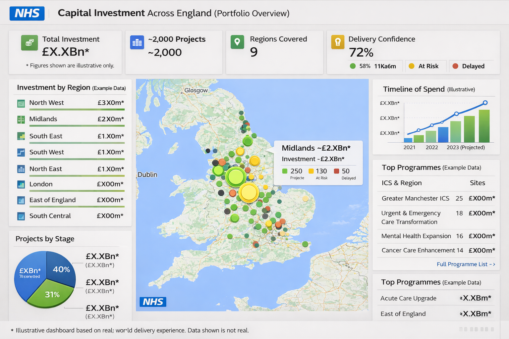
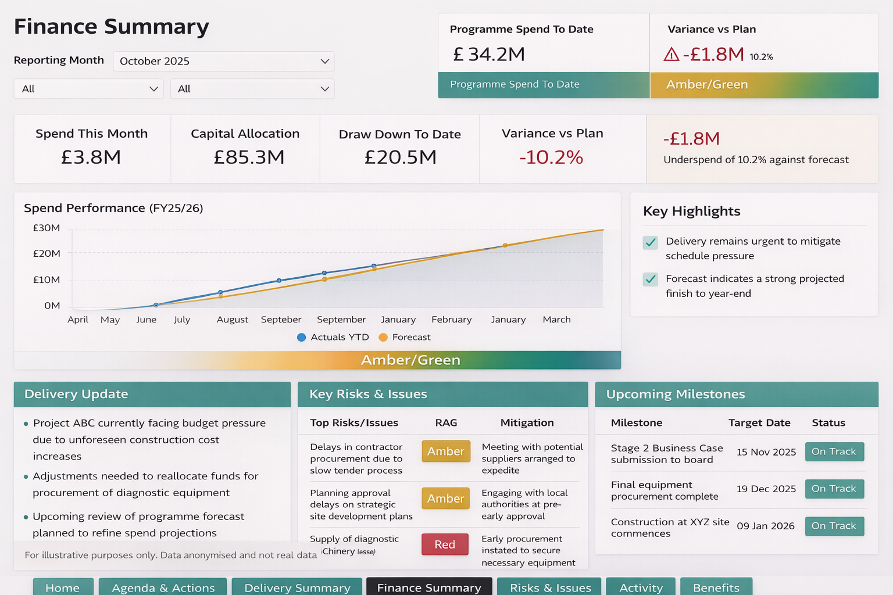

Enquiry triage & follow-ups
Sort incoming requests, capture key details, prepare a draft response and keep the next action visible.
USEFUL OUTPUTSRequest triage · Draft replies · Follow-up reminders
AI automation · Connected workflows · Reporting
We help UK teams automate enquiries, document handling, follow-ups and reporting with practical AI and connected workflows — built around the tools they already use, with people overseeing the important steps.
01 / WHAT AI CAN DO
AI can take on predictable steps that consume time. We shape the workflow, exception handling and human checks around the job.
Sort incoming requests, capture key details, prepare a draft response and keep the next action visible.
USEFUL OUTPUTSRequest triage · Draft replies · Follow-up reminders
Extract and check important details, update the right records and flag missing or unusual information for review.
USEFUL OUTPUTSData extraction · Validation · Exception routing
Bring information together, run repeatable checks and prepare regular summaries with less manual copying.
USEFUL OUTPUTSData checks · Reporting packs · Status updates
Use AI when it adds value; use straightforward rules when they do the job better. Your team stays in control of exceptions and decisions.
02 / REPORTING EXAMPLES
A couple of representative dashboard examples. The underlying data has been anonymised.


Representative examples based on delivery experience. No client or programme data is shown.
03 / HOW WE WORK
Start small, get the facts straight and build only what solves the problem.
Agree the question, who needs the answer and what they will do with it.
Understand what exists, what is reliable and where the effort is going.
Build a clear report, analysis or automation — with enough handover to keep it useful.
04 / DATA & ANALYSIS
Clear reporting and analysis help you spot bottlenecks, decide what is worth automating and see whether a change is working. DataWorx brings hands-on experience from complex, stakeholder-heavy environments to practical business problems.
Explore AI automation and supporting servicesA SPECIALIST WORKFLOW
Maintenance triage, enquiry follow-ups and landlord reporting, built around existing systems.
05 / START A CONVERSATION
Tell us about the repetitive task or workflow you’d like to improve. We’ll come back with a clear next step and an honest view on whether AI or automation is a good fit.
hello@data-worx.uk